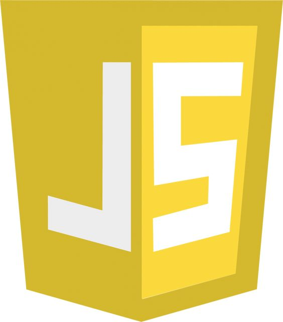

Atividades
Projeto Mappy
Pré-incubado pelo CBTI
Sou uma das desenvolvedoras deste projeto, que atualmente está pré-incubado pelo Núcleo Incubador de Bragança Paulista. Nosso principal objetivo é utilizar a tecnologia para auxiliar pessoas com deficiência. Durante o desenvolvimento, adquiri diversas habilidades, como prototipação, desenvolvimento de ideias, noções de empresas e negócios, trabalho em equipe, entre outras. Também participei da competição Technovation Girls, voltada para meninas na área de tecnologia, onde aprimoramos nossas habilidades em empreendedorismo. Além disso, apresentei o projeto na Bragantec, a feira de ciências do IFSP-BRA, onde recebemos muitos feedbacks positivos.
2023 - Presente
Skills
Linguagens que possuo conhecimento:
-

-

- 
-

-

- C
- HTML & CSS
- JavaScript
- Java